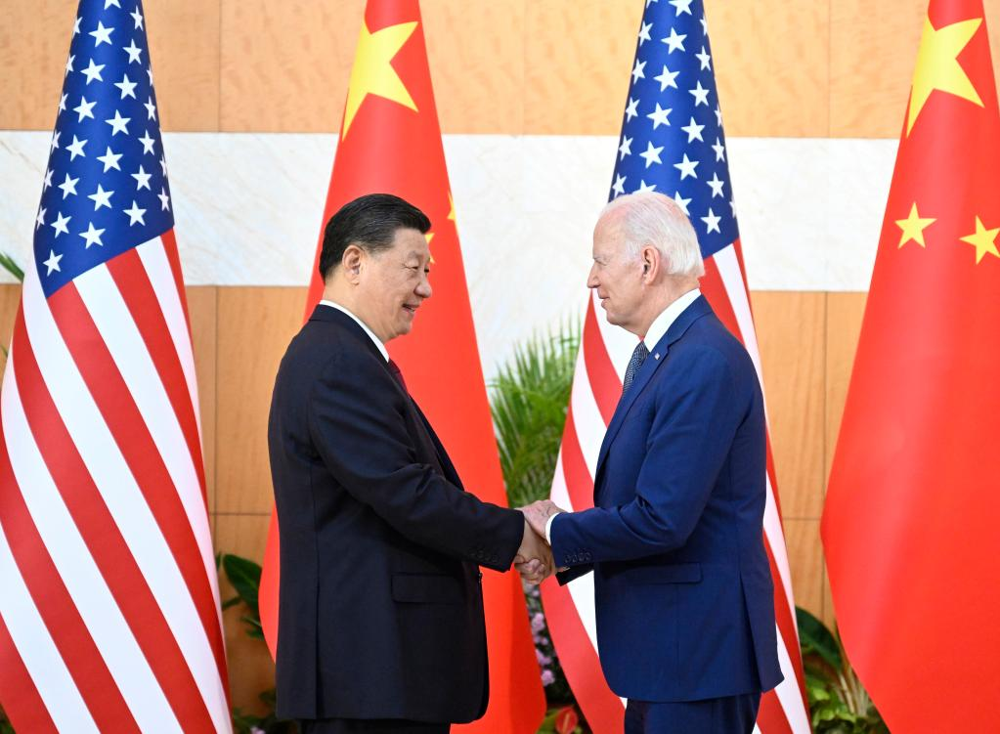
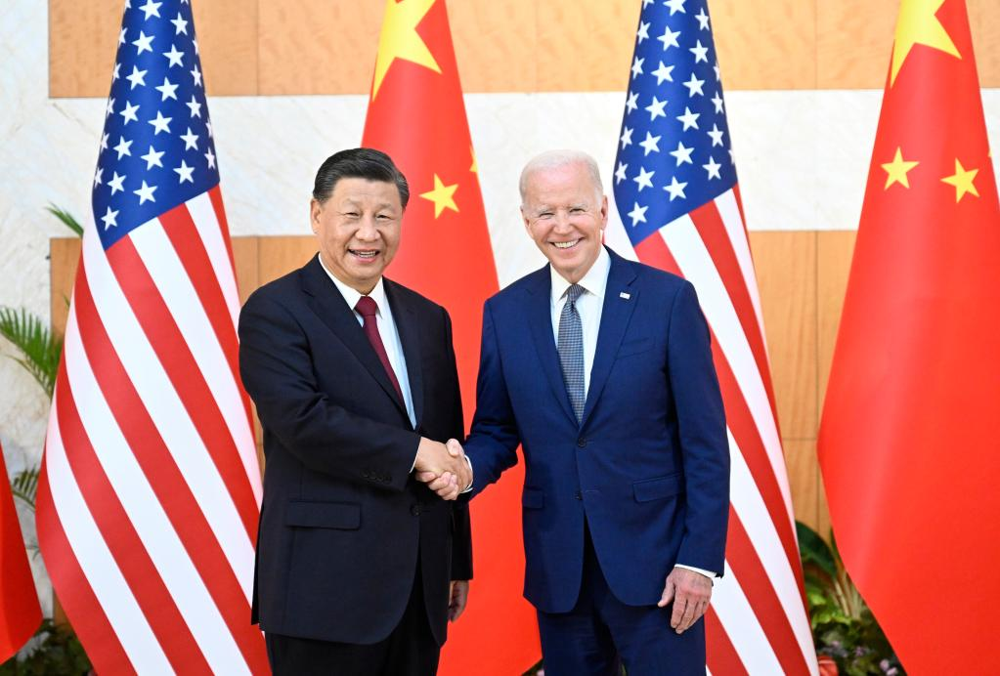

当地时间11月15日下午，国家主席习近平在巴厘岛会见韩国总统尹锡悦。
习近平指出，中韩是搬不走的近邻，也是分不开的合作伙伴，在维护地区和平、促进世界繁荣方面负有重要责任，也有广泛利益交集。今年是中韩建交30周年。30年历史表明，中韩关系健康稳定发展符合两国人民根本利益。中方愿同韩方一道，维护、巩固、发展好中韩关系，为地区和世界提供更多稳定性。
习近平强调，双方要加强战略沟通，增进政治互信。中韩经济高度互补，要推进发展战略对接，实现两国共同发展繁荣。要加快双边自由贸易协定谈判，深化高技术制造、大数据、绿色经济等领域合作，共同维护国际自由贸易体系，保障全球产业链供应链安全、稳定、畅通，反对将经济合作政治化、泛安全化。中方愿同韩方开展人文交流合作，加强在二十国集团等沟通协调，共同践行真正的多边主义，维护地区和平稳定大局。
尹锡悦表示，韩方愿以今年韩中建交30周年为契机，同中国发展基于相互尊重和互利成熟的关系，这符合两国共同利益。韩方希望同中方保持各层级交往，加强人文交流，增进两国民间友好，维护自由贸易体制，合作应对全球性挑战。
丁薛祥、王毅、何立峰等参加会见。
当地时间11月15日下午，国家主席习近平在巴厘岛会见澳大利亚总理阿尔巴尼斯。
习近平指出，中澳关系曾长期走在中国同发达国家关系前列，值得双方珍惜。过去几年，中澳关系遇到困难，这是我们不愿看到的。中澳两国同为亚太地区重要国家，应该改善、维护、发展好两国关系，这不仅符合两国人民根本利益，也有利于促进亚太地区和世界和平与发展。
习近平强调，今年是中澳建交50周年。两国关系走向成熟稳定，首先应体现在正确看待彼此的差异和分歧。要超越分歧，相互尊重，互利共赢，这是两国关系实现稳定发展的关键。中澳之间从来没有根本利害冲突，有的是两国人民传统友谊和高度互补的经济结构，有的是维护联合国宪章宗旨和原则的共同诉求。中方重视澳方近期展现的改善和发展两国关系的意愿。双方应该总结经验教训，探讨如何推动两国关系重回正确轨道并可持续地向前发展。双方经贸合作潜力巨大，希望澳方为中国企业赴澳投资经营提供良好营商环境。
阿尔巴尼斯表示，澳中两国很快将迎来建交50周年。澳中全面战略伙伴关系符合双方共同利益。澳方愿意秉持当年澳中建交初心，本着相互尊重、平等合作精神，同中方共同努力，通过建设性、坦诚对话沟通缩小分歧，推动澳中关系稳定发展，并就应对气候变化、经贸等重要问题开展更多合作。
丁薛祥、王毅、何立峰等参加会见。
当地时间11月15日上午，国家主席习近平在巴厘岛会见法国总统马克龙。
习近平指出，过去3年，我们通过各种方式密切沟通，使中法关系保持了积极发展势头，两国重要合作取得积极进展。当前，世界进入新的动荡变革期。作为世界多极化格局中的两支重要力量，中法、中欧应该坚持独立自主、开放合作的精神，推动双边关系在正确轨道上行稳致远，为世界注入稳定性和正能量。
马克龙说：“请允许我致以我最热烈的祝贺，祝贺习近平主席连任中共中央总书记，祝贺中共二十大取得圆满成功。我们的此次会见使我个人得以当面表达我的强烈意愿，也为双方合作注入新的动力，同时也使得我们双方联合起来，应对重大的国际挑战。”
当地时间11月15日下午，国家主席习近平在巴厘岛会见荷兰首相吕特。
习近平指出，今年是中荷建立大使级外交关系50周年。两国关系面临新的发展前景。中荷关系最宝贵的经验就是开放务实。双方要继续发扬好这一特色，加强高层交往，巩固政治互信，把握好双边关系正确方向，坚持互利共赢，推进农业、水利、能源等领域合作，推动中荷开放务实的全面合作伙伴关系得到更大发展。
习近平强调，这个世界是一体的，各国应该相互合作，而不应该寻求“脱钩”。要反对将经贸问题政治化，维护全球产业链供应链稳定。中方愿同荷方维护和践行真正的多边主义，坚持经济全球化正确方向，维护以世贸组织为核心的多边贸易体制，共同营造有利于发展的国际环境。希望荷方推动欧洲坚持开放合作，为促进中欧关系健康稳定发展发挥积极作用。
吕特表示，很高兴在荷中建立大使级外交关系50周年这一特殊年份同习近平主席再次见面。双方举行了多项庆祝活动，中国古典文学名著《红楼梦》首次被翻译成荷兰文。荷方对习近平主席2014年对荷兰进行的成功国事访问记忆犹新，希望同中方密切交往，保持双边关系发展的强劲势头。荷方愿同中方着眼大局，挖掘潜力，拓展创新、气候变化等领域对话与合作，推动两国关系在未来50年取得更大成就。
丁薛祥、王毅、何立峰等参加会见。
当地时间11月14日下午，国家主席习近平在印度尼西亚巴厘岛同美国总统拜登举行会晤。两国元首就中美关系中的战略性问题以及重大全球和地区问题坦诚深入交换了看法。
习近平指出，当前中美关系面临的局面不符合两国和两国人民根本利益，也不符合国际社会期待。中美双方需要本着对历史、对世界、对人民负责的态度，探讨新时期两国正确相处之道，找到两国关系发展的正确方向，推动中美关系重回健康稳定发展轨道，造福两国，惠及世界。
习近平介绍了中国共产党第二十次全国代表大会主要情况和重要成果，指出，中国党和政府的内外政策公开透明，战略意图光明磊落，保持高度连续性和稳定性。我们以中国式现代化全面推进中华民族伟大复兴，继续把实现人民对美好生活的向往作为出发点，坚定不移把改革开放进行下去，推动建设开放型世界经济。中国继续坚定奉行独立自主的和平外交政策，始终根据事情本身的是非曲直决定自己的立场和态度，倡导对话协商、和平解决争端，深化和拓展全球伙伴关系，维护以联合国为核心的国际体系和以国际法为基础的国际秩序，推动构建人类命运共同体。中国将坚持和平发展、开放发展、共赢发展，做全球发展的参与者、推动者，同各国一起实现共同发展。
习近平指出，世界正处于一个重大历史转折点，各国既需要面对前所未有的挑战，也应该抓住前所未有的机遇。我们应该从这个高度看待和处理中美关系。中美关系不应该是你输我赢、你兴我衰的零和博弈，中美各自取得成功对彼此是机遇而非挑战。宽广的地球完全容得下中美各自发展、共同繁荣。双方应该正确看待对方内外政策和战略意图，确立对话而非对抗、双赢而非零和的交往基调。我高度重视总统先生有关“四不一无意”的表态。中国从来不寻求改变现有国际秩序，不干涉美国内政，无意挑战和取代美国。双方应该坚持相互尊重、和平共处、合作共赢，共同确保中美关系沿着正确航向前行，不偏航、不失速，更不能相撞。遵守国际关系基本准则和中美三个联合公报，这是双方管控矛盾分歧、防止对抗冲突的关键，也是中美关系最重要的防护和安全网。
习近平系统阐述了台湾问题由来以及中方原则立场。习近平强调，台湾问题是中国核心利益中的核心，是中美关系政治基础中的基础，是中美关系第一条不可逾越的红线。解决台湾问题是中国人自己的事，是中国的内政。维护祖国统一和领土完整，是中国人民和中华民族的共同心愿。任何人想把台湾从中国分裂出去，都违背中国的民族大义，中国人民都绝不会答应！我们希望看到并始终致力于保持台海的和平稳定，但“台独”同台海和平稳定水火不容。希望美方言行一致，恪守一个中国政策和中美三个联合公报。总统先生多次讲过不支持“台独”，无意将台湾作为谋求对华竞争优势或遏制中国的工具。希望美方将总统先生的承诺落到实处。
习近平指出，自由、民主、人权是人类的共同追求，也是中国共产党的一贯追求。美国有美国式民主，中国有中国式民主，都符合各自的国情。中国全过程人民民主基于中国国情和历史文化，体现人民意愿，我们同样感到自豪。任何国家的民主制度都不可能至善至美，都需要不断发展完善。对双方存在的具体分歧，可以进行探讨，前提是平等交流。所谓“民主对抗威权”不是当今世界的特点，更不符合时代发展的潮流。
习近平指出，美国搞的是资本主义，中国搞的是社会主义，双方走的是不同的路。这种不同不是今天才有的，今后还会继续存在。中国共产党领导和中国社会主义制度得到14亿人民拥护和支持，是中国发展和稳定的根本保障。中美相处很重要一条就是承认这种不同，尊重这种不同，而不是强求一律，试图去改变甚至颠覆对方的制度。美方应将有关承诺体现在具体行动上，而不是说一套做一套。
习近平强调，中美是两个历史文化、社会制度、发展道路不同的大国，过去和现在有差异和分歧，今后也还会有，但这不应成为中美关系发展的障碍。任何时候世界都有竞争，但竞争应该是相互借鉴、你追我赶，共同进步，而不是你输我赢、你死我活。中国有自强不息的光荣传统，一切打压和遏制只会激发中国人民的意志和热情。打贸易战、科技战，人为“筑墙设垒”，强推“脱钩断链”，完全违反市场经济原则，破坏国际贸易规则，只会损人不利己。我们反对把经贸科技交流政治化、武器化。当前形势下，中美两国共同利益不是减少了，而是更多了。中美不冲突、不对抗、和平共处，这是两国最基本的共同利益。中美两国经济深度融合，面临新的发展任务，需要从对方发展中获益，这也是共同利益。全球经济疫后复苏、应对气候变化、解决地区热点问题也离不开中美协调合作，这还是共同利益。双方应该相互尊重，互惠互利，着眼大局，为双方合作提供好的氛围和稳定的关系。
拜登表示，我同习近平主席相识多年，保持着经常性沟通，但无论如何也代替不了面对面的会晤。祝贺你再次连任中共中央总书记。美中作为两个大国，有责任保持建设性关系。美方致力于保持两国元首以及政府各层级沟通渠道畅通，就双方存在分歧的问题开展坦诚对话，为应对气候变化、粮食安全等重要全球性挑战加强必要合作，发挥关键作用。这对美中两国和两国人民至关重要，对整个世界也十分重要。我愿重申，一个稳定和发展的中国符合美国和世界的利益。美国尊重中国的体制，不寻求改变中国体制，不寻求“新冷战”，不寻求通过强化盟友关系反对中国，不支持“台湾独立”，也不支持“两个中国”“一中一台”，无意同中国发生冲突。美方也无意寻求同中国“脱钩”，无意阻挠中国经济发展，无意围堵中国。
拜登表示，美中关系如何发展，对未来世界走向至关重要。美中双方有共同责任向世界展示，美中能够管控分歧，避免和防止由于误解误判或激烈竞争演变成对抗甚至冲突。美方认同应确立指导美中关系的原则，可由双方团队在已有的共识基础上继续谈下去，争取尽早达成一致。美国政府奉行一个中国政策，不寻求利用台湾问题作为工具遏制中国，希望看到台海和平稳定。
两国元首同意，双方外交团队保持战略沟通，开展经常性磋商。同意两国财金团队就宏观经济政策、经贸等问题开展对话协调。同意共同努力推动《联合国气候变化框架公约》第二十七次缔约方大会取得成功。双方就开展两国公共卫生、农业和粮食安全对话合作达成一致。同意用好中美联合工作组，推动解决更多具体问题。同意中美人文交流十分重要，鼓励扩大两国各领域人员交往。
两国元首还就乌克兰危机等问题交换了意见。习近平指出，中方高度关切当前乌克兰局势。危机爆发后，我就提出了“四个应该”，前不久我又提出“四个共同”。面对乌克兰危机这样的全球性、复合性危机，有这么几条值得认真思考：一是冲突战争没有赢家；二是复杂问题没有简单解决办法；三是大国对抗必须避免。中方始终站在和平的一边，将继续劝和促谈，支持并期待俄乌双方恢复和谈，同时希望美国、北约、欧盟同俄罗斯开展全面对话。
两国元首都认为，会晤是深入坦诚和建设性的，责成两国工作团队及时跟进和落实两国元首达成的重要共识，采取切实行动，推动中美关系重返稳定发展轨道。两国元首同意继续保持经常性联系。
丁薛祥、王毅、何立峰等参加会见。


Last modified on 2022-11-15